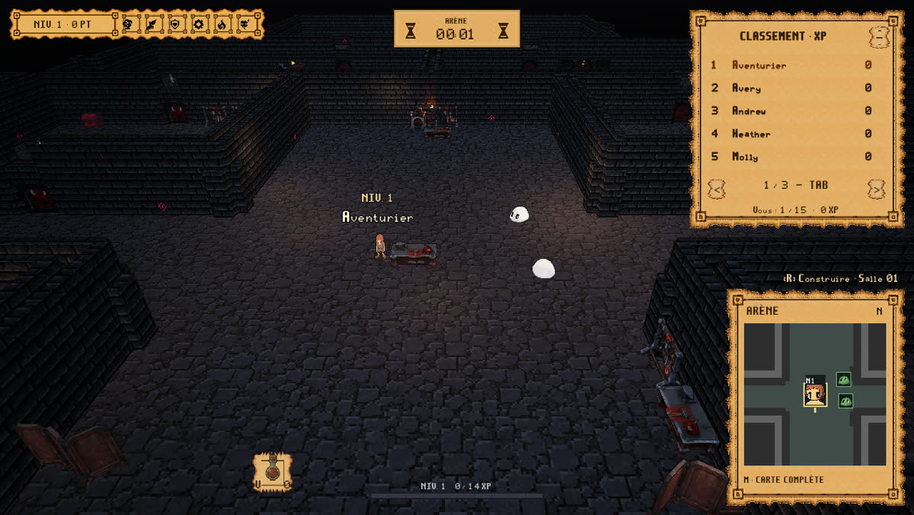
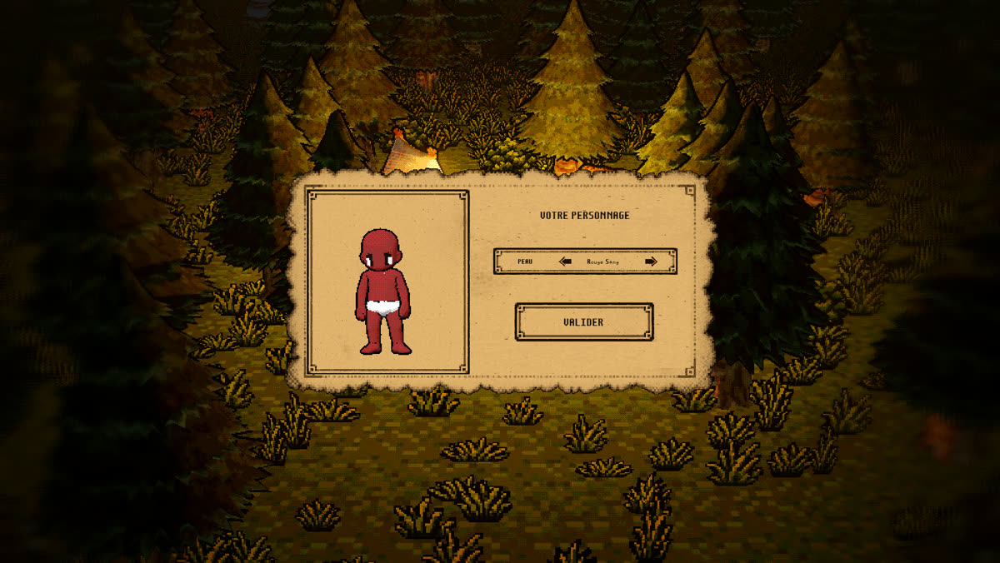
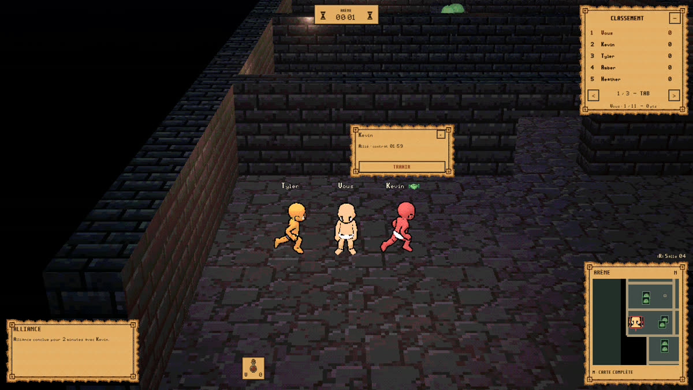
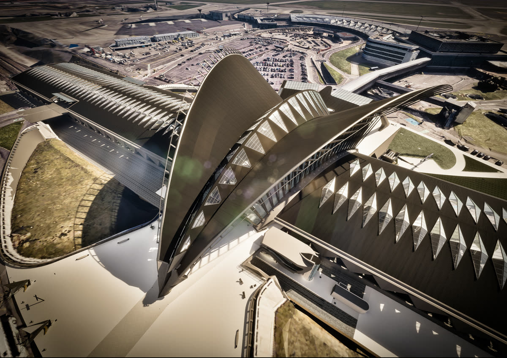
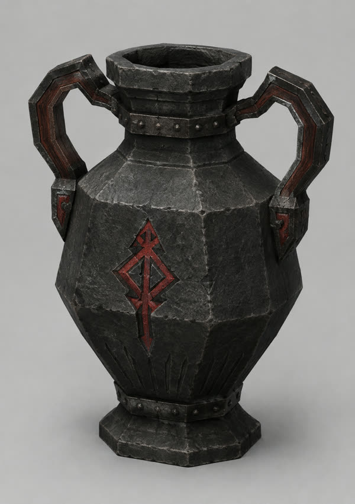
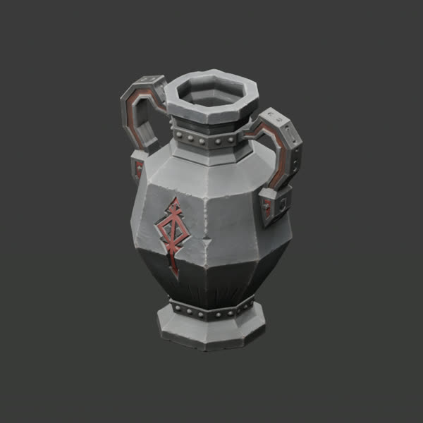
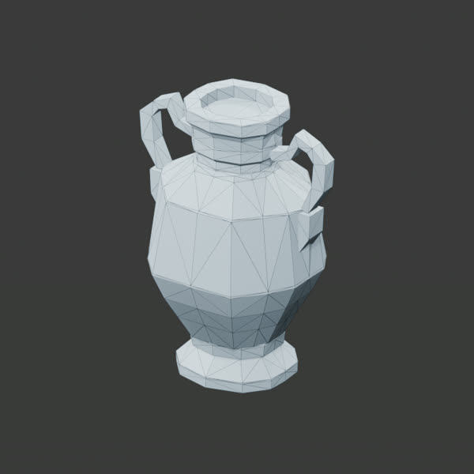
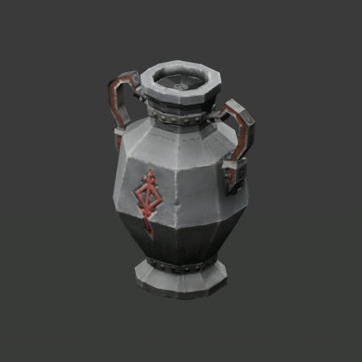
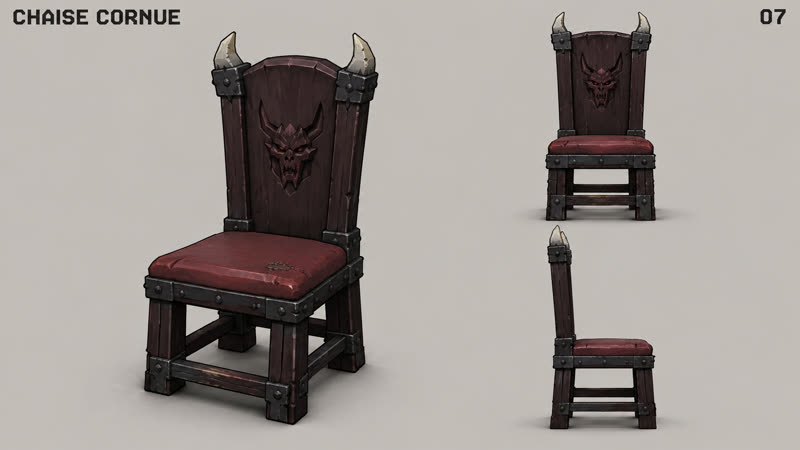
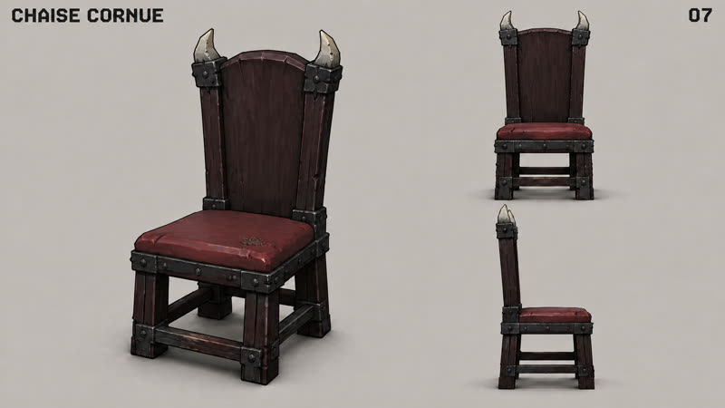

VESTIGES
2024 · film de fin d'études, MJM Graphic Design · 1 min 32Court métrage d'animation réalisé sous Unreal Engine 5, de la modélisation au rendu. Film complet, avec le son.
Graphiste 3D & IA générative, temps réel
Je fais de la 3D pour le jeu et le patrimoine, et je cherche depuis plusieurs mois comment l'IA générative trouve sa place dans une vraie chaîne de production. Voici les projets où je l'ai testée, et ceux où je m'en suis passé.
Les projets principaux, du plus récent au plus ancien.



Un battle royale multijoueur en 3D, jouable dans le navigateur, que je développe seul depuis deux mois. Vingt joueurs entrent dans le même donjon, revendiquent des salles, s'allient et se trahissent. La mort est définitive et chaque partie repart de zéro, dans l'esprit die and retry.
Je l'ai commencé sous Unreal Engine, puis je suis passé sous Godot pour mieux travailler avec l'IA agentique. Des agents écrivent le code avec moi, et près de cinq cents tests automatisés valident chaque modification.
Le jeu a commencé en pixel art 2D, avec un outil d'édition animé que j'ai développé avec Claude dans Blender. Il est passé depuis en 3D. Les objets partent de concepts générés par IA, deviennent une 3D haute définition, puis passent en retopologie et en cuisson de textures. La section Méthode suit un objet de bout en bout. Je garde la direction artistique et la validation de chaque asset.
Ce que le projet m'apprend, c'est que l'IA va vite mais ne tient pas un univers toute seule. La cohérence et la validation restent un travail d'artiste.
L'introduction d'une docu-fiction sur Ötzi, l'homme des glaces. Le visage, les mains, la chasse et le village au crépuscule sont entièrement produits avec l'IA générative, sous ma direction artistique.
Le travail consiste à tenir le même personnage et la même lumière d'un plan à l'autre, ce que les modèles ne font pas d'eux-mêmes.
Un jeu mobile d'exploration de l'abbaye troglodyte de Saint-Roman, construit à partir du site réel. Il est publié sur l'App Store et Google Play pour l'abbaye, qui en est l'éditeur.
C'est une forme proche du serious game. Le public ne joue pas forcément, et le jeu doit d'abord transmettre un lieu. J'ai assuré la 3D, l'interface et la production jusqu'à la mise en ligne.
L'interface a été produite sous ComfyUI début 2025, à une époque où les modèles ne tenaient pas une forme. La reprise à la main était donc l'essentiel du travail.

Deux ans d'alternance chez GEOFIT, dans le relevé 3D. Je transformais des nuages de points issus de scanners en modèles exploitables, puis en visites virtuelles sous Unreal Engine 5, dont le Louvre, la gare de Lyon Saint-Exupéry et l'abbaye de Nieul.
Pour les ornements que la chaîne standard restitue mal, colonnes et chapiteaux, j'ai mis au point une méthode sous Houdini et ZBrush, que j'ai réemployée ensuite sur Saint-Roman.
Court métrage d'animation réalisé sous Unreal Engine 5, de la modélisation au rendu. Film complet, avec le son.
Visuels 3D pour une soirée techno, en boucle sur écran.
Les modèles changent tous les trois mois. Ce qui dure, c'est la façon de les encadrer. Voici celle que j'applique sur Tribute3D, montrée avec les fichiers réels du projet.
L'amphore runique du château, suivie étape par étape.
Avant toute génération, une charte écrite fixe la direction artistique du lot.
« La fonction explique la forme. Une silhouette principale et un détail distinctif par objet. »

Une image par objet sur GPT Image 2. Le prompt est archivé avec l'image.

Le concept validé devient une 3D haute définition, générée avec Hunyuan3D.

Un algorithme de retopologie tire de la source un maillage léger et propre. 888 triangles.

Le détail de la source est cuit dans des textures PBR de 256 px, puis l'objet entre dans Godot.


Rien ne part en 3D sans validation de l'image. Ici, la tête de démon du dossier chargeait trop l'objet, elle a été retirée en version 2. Les versions écartées restent archivées, pour garder la trace de chaque décision.
J'adopte un modèle quand il progresse, et je le laisse quand un autre fait mieux.
Depuis 2023. Des workflows en nœuds, rejouables. L'interface de Saint-Roman en est sortie début 2025.
Concepts d'objets et d'interface de Tribute3D, plus de mille images générées puis triées.
Adoptés l'un après l'autre au fil de leurs progrès, sur Ötzi et mes essais de réalisation.
Mon modèle vidéo actuel.
Sources haute définition des props, toujours retopologisées ensuite.
Essayés sur des props. Pas retenus pour l'instant, le résultat ne tenait pas la charte.
Bruitages du jeu générés en couches dans ComfyUI, pilotés par script, graines conservées.
Les agents écrivent le code de Tribute3D. Je rédige les briefs, je relis, les tests tranchent.
Les agents pilotent Unreal, Blender et ComfyUI. Le niveau Unreal a été extrait ainsi vers Godot, soit 5 861 acteurs.
Chaque valeur du projet porte sa provenance, mesurée, relevée ou choisie. Un test ne compte que si on l'a d'abord vu échouer sur le défaut qu'il doit attraper.
Prompts archivés, graines conservées, retouches scriptées. Le parchemin de l'interface de Tribute passe par un script qui réduit sa palette à 32 couleurs, sans lissage, et on peut le refaire à l'identique.
L'IA fait gagner du temps, jamais au prix de la qualité. Un asset généré doit tenir la même exigence qu'un asset fait à la main, sinon il n'entre pas dans le jeu.
Je vis à Thouaré-sur-Loire, près de Nantes, et je suis disponible immédiatement.